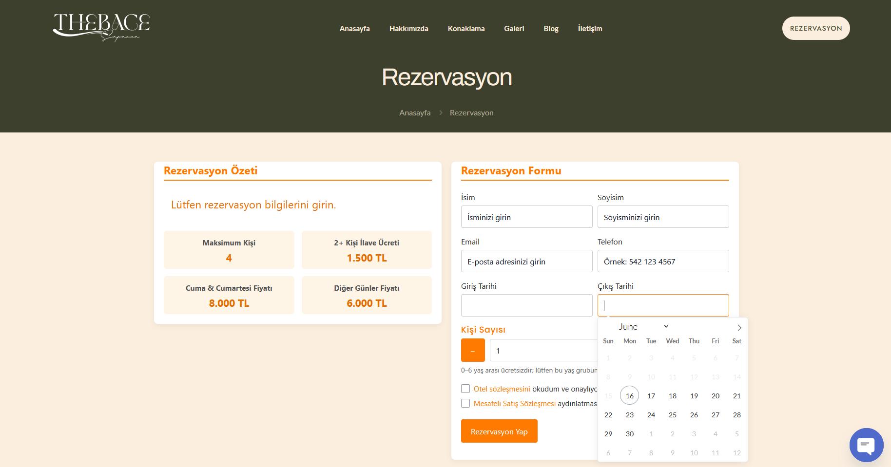
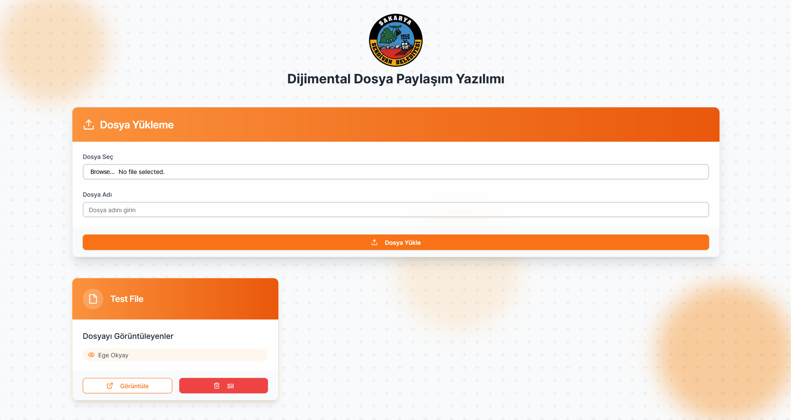
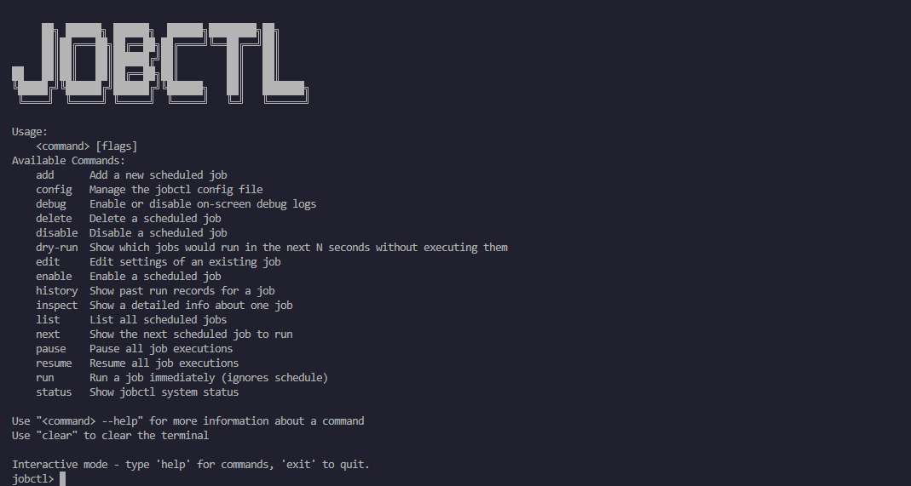
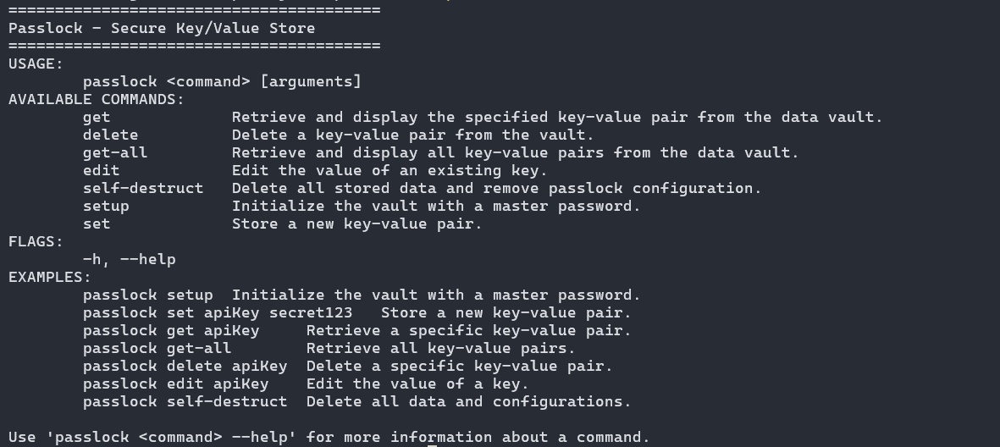
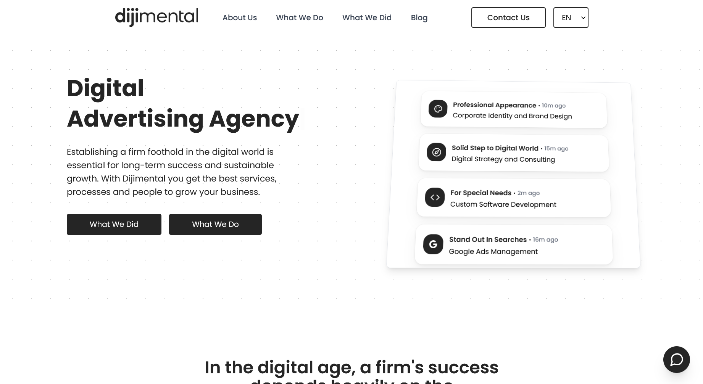

Software engineer focused on backend and server-side systems.
Currently employed as XXX XXXXXXX at XXXXXXXXXX.
Studying Computer Engineering @Politecnico di Torino
Contact me at egeokyay0@gmail.com
Dijimental |
Software Engineer Full-time Jun 2024 - Sep 2025 Serdivan, Sakarya, Türkiye
Skills: Software Architecture, Full-Stack Development, Team Leadership, Nginx, Caddy, Docker, Remix, NestJS, Go, Flutter, PHP |
Dijimental |
Software Engineering Intern Internship Jun 2023 - May 2024 Serdivan, Sakarya, Türkiye
Skills: PHP, Full-Stack Development, Express.js |
Online Reservation WordPress Plugin |

WordPress plugin for online reservations with payment integration and an admin dashboard to track client bookings. Stack: PHP, jQuery, MySQL, Vepara Payment System |
Serdivan Municipality File Sharing Software |

File sharing platform for Serdivan Municipality where admins upload videos and PDFs, and track employee engagement with the content. Stack: Remix, PostgreSQL (with Prisma ORM) |
jobctl |

Lightweight job scheduler and runner in your terminal via a simple CLI. Stack: Go |
Passlock |

CLI tool to store AES encrypted key-value pairs. Stack: Go |
dijimental.com |

SEO optimized full-stack multi language website with an admin dashboard. Stack: Next.js, Tailwind, MySQL (with Prisma ORM) |
| Encryption Strategies for Data Security: An Analysis of Modern Practices | read |
| ADYS - Emergency Situation Communication System Report | read |